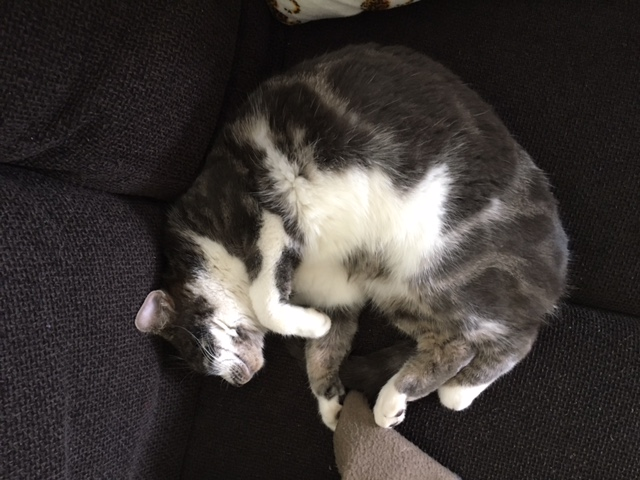

Chase is onze 3e poes. We hebben een beetje pech met poezen. Eerst woonde Poesie bij ons. Onze dochter kreeg
Poesie van haar om als kitten, maar na 2,5 jaar overleed Poesie door nierfalen.
Daarna haalden wij Ukkie uit het kittenadoptiecentrum. Ukkie was toen al 4 maanden. Wij woonden in een unit, tijdelijk. Op een dag waren we haar zat. Ukkie was nog niet gecastreerd en mocht nog niet naar buiten. Wij hebben haar het hok in gestuurd, alleen de volgende dag was ze weg! Na 12 dagen vond ik haar terug en was haar staart aan het afsterven. Na 2 maanden viel deze er ook werkelijk af en bleef er een stompje over. We hebben haar omgedoopt tot Stukkie. Gekheid natuurlijk. Helaas kwam ze vorig jaar in mei wel zo aan haar eind. Ze kwam in de maaier van de boer. De details zal ik je besparen. Ukkie is maar net 3 jaar geworden.
In juni 2020 is Chase bij ons komen wonen. Zij was over bij de eigenaar. De eigenaar had haar gehaald als poes, maar het bleek een kater te zijn. Dus hup, kattenluikje op chip geïnstalleerd en 2 weken voor de vakantie Chase laten chippen en enten. En toen bleek Chase toch een poes te zijn! Nu was ze al steeds buiten geweest, dus we hebben het zo gelaten en haar op tijd laten castreren. Chase is hartstikke lief, een knuffel, inmiddels 1 jaar en wij hopen dat we van haar wat langer kunnen genieten!
